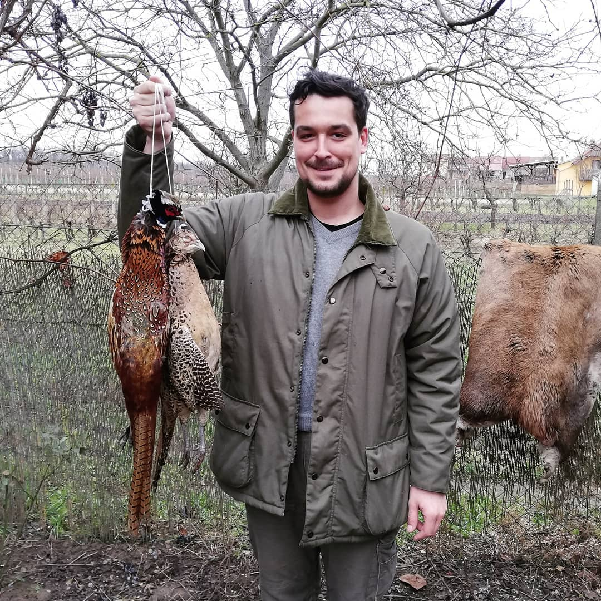

Pečený bažant podľa @staromilec — Normy Jedál
Ohledně toho, co budu v sobotu dělat k večeři mám jasno!
Vymyslel jsem z toho asi čtyři jídla, a brácha mě pořád odrazuje od trhání peří, že to prý bude hrozné, a nad nadívaným bažantím krkem ohrnuje nos, tak jsem zvědavý, jak se mně to povede. A vy buďte také, o všem napíšu na blogu. 😁
I když na to bundu mám, na myslivost jsem se nedal - ty bažanty jsem dostal od místních myslivců. 😉
#bazant #myslivec #hon #loveckasezona #pecenybazant #zverina #divocina #pernatazver #hunter #pheasant #pheasants #venison #maninthekitchen #homeisthehunter #homefromthehill